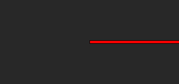
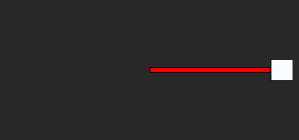
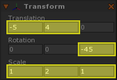
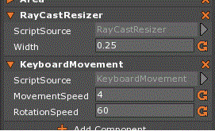
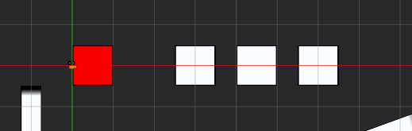
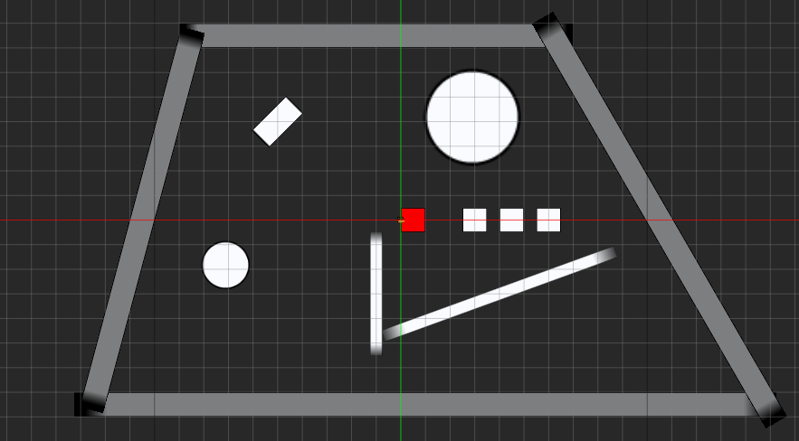

Ray Casting
This lesson explains ray casting: what it is, what it does, and how to use it.
Create a New Project
Ray casting is a powerful technique that is used to check for collision between an arbitrary ray and a given collider — that is, it provides a way for us to check to see if a particular object is on a particular line.
Ray casting is useful in a wide variety of applications, such as
- creating realistic laser beams
- simulating high-velocity projectiles
- checking line of sight
- detecting walls
- finding distances
- moving 3D 3rd-person cameras
Let’s create a laser beam that uses ray casting to stretch and shrink itself to whatever it’s hitting.
Creating a Laser Beam
- Command:
CreateSpriteor - In the Properties Window
- Set Name to:
LaserBeam - Under Sprite
- Set Color to:
[R: 255, G: 0, B: 0, A: 1.00],#FF0000
- Set Color to:
- Add an Orientation component
- Under Orientation
- Set DefaultOrientationBases to:
ForwardXUpZ
- Set DefaultOrientationBases to:
- Add an Area component
- Under Area
- Set Origin to:
CenterLeft
- Set Origin to:
- Set Name to:
We’ll need to write a new component to control the size of the beam, so let’s make that now. We’ll start with a stub of a component and then add in the necessary functionality bit by bit.
- Add a new ZilchScript resource named:
RayCastResizer - Change the RayCastResizer script to the following code:
class RayCastResizer : ZilchComponent
{
}
Dependencies and Properties
First, let’s declare our dependencies — other components we know we’re going to need for this script to work correctly. We’ll need the following components:
- Transform — to define the starting point of the ray
- Orientation — to define the direction of the ray
- We could use the Rotation of the beam’s Transform and some math to figure out its facing vector, but the Orientation component conveniently does all that for us.
- Area — we’re going to be using it to modify the sprite’s size (its
length and width) based on the results of the ray casting
- Also, by setting the Area component’s Origin to be on the left side of the sprite, we can make the beam automatically center itself properly as it changes its size.
Let’s update our script.
- Update the RayCastResizer script with the following code:
class RayCastResizer : ZilchComponent
{
[Dependency]
var Transform : Transform;
[Dependency]
var Orientation : Orientation;
[Dependency]
var Area : Area;
}
Next, we’ll need to declare a property:
- Width — defines how wide the object should be
- Our ray casting will only tell us how long to make our laser beam, but we still need to know how wide to make it.
- It should be wide enough to be visible, but suitably small for a laser beam.
Let’s update our script.
- Update the RayCastResizer script with the following code:
class RayCastResizer : ZilchComponent
{
[Dependency]
var Transform : Transform;
[Dependency]
var Orientation : Orientation;
[Dependency]
var Area : Area;
[Property]
var Width : Real = 0.25;
}
Now we’re ready to begin.
- Update the RayCastResizer script with the following code:
class RayCastResizer : ZilchComponent
{
[Dependency]
var Transform : Transform;
[Dependency]
var Orientation : Orientation;
[Dependency]
var Area : Area;
[Property]
var Width : Real = 0.25;
function Initialize(init : CogInitializer)
{
Zero.Connect(this.Space, Events.LogicUpdate, this.OnLogicUpdate);
}
function OnLogicUpdate(event : UpdateEvent)
{
var length = this.GetLength();
var width = this.Width;
var size = Real2(length, width);
this.Area.Size = size;
}
function GetLength() : Real
{
return 1.0;
}
}
We have a GetLength function now that will use ray casting to determine the
proper length of our laser beam. (For now, it just returns 1.0 to appease
the compiler.)
- Select the LaserBeam object
- In the Properties Window
- Save and run the project

Admittedly, this is a bit underwhelming, but we can see that the width is being set properly, and the length is being set to 1 unit, as we specified.
Casting a Ray
There are a number of casting functions available to us, and they all live in the PhysicsSpace. We’ll start with the most basic one: CastRayFirst, which takes a single argument — the ray to cast — and returns an object of type CastResult, which contains information about the first object hit by that ray (if any).
To cast a ray, first you must declare and define one. As we know, Zero defines a ray by a point and a direction:
var ray = Ray();
var thisPosition = this.Transform.WorldTranslation;
var rayDirection = this.Orientation.WorldForward;
ray.Start = thisPosition;
ray.Direction = rayDirection;
The ray starts at the beam’s position and extends in the direction of the beam’s facing vector, defined by its Orientation component. To cast it, just pass it into the CastRayFirst function (and give it a place to put the result):
var castResult = this.Space.PhysicsSpace.CastRayFirst(ray);
This castResult object has some useful information: it tells us what was
hit (castResult.ObjectHit), where it was hit (castResult.WorldPosition),
the normal vector of the collision (castResult.Normal), and so on. What we
care about in this case is its distance:
castResult.Distance
This tells us how far the ray traveled before it hit whatever it hit. If it
didn’t hit anything at all, then the ray would have traveled infinitely far. In
such a case, castResult.Distance is equal to the largest possible Real
value — effectively infinity, for most practical purposes. With this, we can
make our GetLength function give us the actual proper length.
- Update the RayCastResizer script with the following code:
function GetLength() : Real
{
var ray = Ray();
var thisPosition = this.Transform.WorldTranslation;
var rayDirection = this.Orientation.WorldForward;
ray.Start = thisPosition;
ray.Direction = rayDirection;
var castResult = this.Space.PhysicsSpace.CastRayFirst(ray);
return castResult.Distance;
}

Since the beam has nothing to hit, it is stretched to (practically) infinite length. Let’s give it an object to hit.
- Stop the project
- Command:
CreateSpriteor - In the Properties Window
- Set Name to:
Obstruction - Add a BoxCollider component
- Under Transform
- Set Translation to:
[6, 0, 0]
- Set Translation to:
- Set Name to:
- Save and run the project

The beam stops when it hits a collider.
Movement and Rotation
It will be easier to see the results of our ray casting if we are able to move and rotate the beam.
- Add a new ZilchScript resource named:
KeyboardMovement - Change the KeyboardMovement script to the following code:
class KeyboardMovement : ZilchComponent
{
[Property]
var MovementSpeed : Real = 4.0;
[Property]
var RotationSpeed : Real = 60.0;
function Initialize(init : CogInitializer)
{
Zero.Connect(this.Space, Events.LogicUpdate, this.OnLogicUpdate);
}
function OnLogicUpdate(event : UpdateEvent)
{
var mov = Real3.Zero;
var rot = 0.0;
if(Zero.Keyboard.KeyIsDown(Keys.D))
mov.X += this.MovementSpeed;
if(Zero.Keyboard.KeyIsDown(Keys.A))
mov.X -= this.MovementSpeed;
if(Zero.Keyboard.KeyIsDown(Keys.W))
mov.Y += this.MovementSpeed;
if(Zero.Keyboard.KeyIsDown(Keys.S))
mov.Y -= this.MovementSpeed;
if(Zero.Keyboard.KeyIsDown(Keys.Left))
rot += this.RotationSpeed;
if(Zero.Keyboard.KeyIsDown(Keys.Right))
rot -= this.RotationSpeed;
mov *= event.Dt;
var angles = Math.ToRadians(Real3(0.0, 0.0, rot) * event.Dt);
this.Owner.Transform.Translation += mov;
this.Owner.Transform.RotateAnglesLocal(angles);
}
}
- Save the project
- Select the LaserBeam object
- In the Properties Window

You can now move and rotate the beam using the WASD and Arrow keys.
Let’s add a few more obstructions.
- Select the Obstruction object
- Duplicate it a few times with
Ctrl+D - For each duplicate
- In the Properties Window
- Under Transform
- Set the Translation, Rotation and Scale to different numbers
- Under Transform
- In the Properties Window
Note that because we’re making a 2D project, we should avoid translating the objects along the Z-axis, and we should only rotate them around the Z-axis. (Note that you may scale them along their Z-axis if you wish, but you are unlikely to see any effect of doing so.)

These fields are fair game.
Be sure to create at least one circular obstruction as well, so you can see how the beam will interact with a round collider.
- Command:
CreateSpriteor - In the Properties Window
- Set Name to:
Obstruction - Add a SphereCollider component
- Under Sprite
- Set SpriteSource to:
Circle
- Set SpriteSource to:
- Under SphereCollider
- Set Radius to:
0.5
- Set Radius to:
- Under Transform
- Set the Translation and Scale to your liking
- Set Name to:
- Save and run the project

The beam stretches and shrinks itself as it collides with objects.
Order of Updates
If you have particularly keen eyes, or you set your movement/rotation speeds
high enough, you may notice that the beam resizes itself a moment later than
it should. It’s subtle, but it’s there. This is actually because the
RayCastResizer component’s OnLogicUpdate function is being called before
the OnLogicUpdate function of the KeyboardMovement component — that is,
the beam first updates its size, and then updates its position and rotation,
and then is drawn to the screen by the engine.
The effect is so minute that it would probably never make a difference in a game, but if it matters to you, you can fix it by swapping the order of these two components on the LaserBeam cog. (You can quickly do this by dragging the components in the Properties Window.)

The LogicUpdate event (and, really, every event) is sent to components in
connection order — that is, the order that Zero.Connect is called to
connect that component to that event. Since this (usually) happens in the
Initialize function, and since components are initialized in order from
top to bottom, you can (usually) control the order in which components are
updated by changing their vertical order in the Properties Window.
Now that we have ray casting working, let’s get it to do something.
Getting It To Do Something
Let’s make it so that, when the Space bar is pressed, the laser uses ray casting to fire a pulse that turns whatever it hits invisible. We could build this new logic into our RayCastResizer component, but it would be better to create a new component that contains this functionality separately.
We’ll stub out this new component and add to it bit by bit, the same as we did for the RayCastResizer.
- Add a new ZilchScript resource named:
LaserPulse - Change the LaserPulse script to the following code:
class LaserPulse : ZilchComponent
{
}
Let’s begin by marking our dependencies. Like before, we’ll need:
- Transform — to define the starting point of the ray
- Orientation — to define the direction of the ray
Unlike before, we won’t need an Area component, because we’re not going to use this component to modify the size of the beam.
- Update the LaserPulse script with the following code:
class LaserPulse : ZilchComponent
{
[Dependency]
var Transform : Transform;
[Dependency]
var Orientation : Orientation;
}
Now we can get going. We know we’re going to use the keyboard to do our pulse
firing, so we’ll connect to the KeyDown event on Zero.Keyboard.
- Update the LaserPulse script with the following code:
class LaserPulse : ZilchComponent
{
[Dependency]
var Transform : Transform;
[Dependency]
var Orientation : Orientation;
function Initialize(init : CogInitializer)
{
Zero.Connect(Zero.Keyboard, Events.KeyDown, this.OnKeyDown);
}
function OnKeyDown(event : KeyboardEvent)
{
if(event.Key == Keys.Space)
this.FirePulse();
}
function FirePulse()
{
}
function TurnInvisible(target : Cog)
{
if(target.Sprite != null)
target.Sprite.Visible = false;
}
}
The FirePulse function doesn’t do anything yet, but it’s going to do some ray casting to determine what the beam is pointing at, and pass that cog into the TurnInvisible function.
Getting the Object that was Hit
We’ll begin the FirePulse function the same way that we began the
RayCastResizer‘s GetLength function — by creating a ray.
var ray = Ray();
var thisPosition = this.Transform.WorldTranslation;
var rayDirection = this.Orientation.WorldForward;
ray.Start = thisPosition;
ray.Direction = rayDirection;
Nothing new here. This time, however, we don’t care about the distance of the ray, but the object that it hit, if any.
var castResult = this.Space.PhysicsSpace.CastRayFirst(ray);
var hit = castResult.ObjectHit;
Now, if the beam is aimed so that it misses everything, then hit will be
null. Otherwise, we have a cog we can use:
if(hit != null)
this.TurnInvisible(hit);
With this, we’re ready to update our code.
- Update the LaserPulse script with the following code:
function FirePulse()
{
var ray = Ray();
var thisPosition = this.Transform.WorldTranslation;
var rayDirection = this.Orientation.WorldForward;
ray.Start = thisPosition;
ray.Direction = rayDirection;
var castResult = this.Space.PhysicsSpace.CastRayFirst(ray);
var hit = castResult.ObjectHit;
if(hit != null)
this.TurnInvisible(hit);
}
- Save the project
- Select the LaserBeam object
- In the Properties Window

Now we can press the Space bar to turn the object the beam is hitting invisible.
Let’s add a little more to the effect — let’s make it so that, when the pulse hits an object, we see a little spot of light for a moment at the location of the hit.
Getting the Location of the Hit
To do this, we will create a sprite at the ray cast’s hit location. So, we must first create an archetype that we will then spawn.
- Command:
CreateSpriteor - In the Properties Window
- Set Name to:
LaserSpot - Set Archetype Name to:
LaserSpot - Under Sprite
- Set SpriteSource to:
Circle - Set BlendMode to:
Additive
- Set SpriteSource to:
- Update the LaserSpot archetype
- Set Name to:
- Save the project
- Delete the LaserSpot object
Next, we need to add some code to our LaserPulse component. We’re going to be spawning an instance of an archetype, so we’ll need to add that archetype as a property. We’ll then make it shrink out of existence with an action sequence, so we’ll need to define the duration of this action as a property as well. Let’s make the appropriate changes to our code.
- Update the LaserPulse script with the following code:
class LaserPulse : ZilchComponent
{
[Dependency]
var Transform : Transform;
[Dependency]
var Orientation : Orientation;
[Property]
var SpotArchetype : Archetype = Archetype.LaserSpot;
[Property]
var SpotShrinkDuration : Real = 0.25;
.
.
.
Now let’s add a function that will create the spot of light.
- Add the following function to the LaserPulse script:
function CreateSpot(position : Real3)
{
var spot = this.Space.CreateAtPosition(this.SpotArchetype, position);
var shrinkSeq = Action.Sequence(spot.Actions);
var duration = this.SpotShrinkDuration;
Action.Property(shrinkSeq, @spot.Transform.Scale,
Real3.Zero, duration, Ease.QuadInOut);
Action.Call(shrinkSeq, spot.Destroy);
}
This function takes a world position as an argument and creates a spot at that
location, then uses an action sequence to cause it shrink down and then destroy
itself. All we need to know for it to work is where the ray cast hit. This
can be found in the castResult with the rest of the info from the ray cast:
castResult.WorldPosition
Let’s update the FirePulse function accordingly.
- Make the following changes to the FirePulse function:
function FirePulse()
{
var ray = Ray();
var thisPosition = this.Transform.WorldTranslation;
var rayDirection = this.Orientation.WorldForward;
ray.Start = thisPosition;
ray.Direction = rayDirection;
var castResult = this.Space.PhysicsSpace.CastRayFirst(ray);
var hit = castResult.ObjectHit;
if(hit != null)
{
this.TurnInvisible(hit);
this.CreateSpot(castResult.WorldPosition);
}
}

Now a spot of light appears momentarily whenever the laser pulse attempts to turn something invisible.
Hitting Multiple Objects
Let’s make things a bit more complicated.
Select the TranslateTool
Select an Obstruction object
Hold Ctrl and drag the object to create a copy
Create a few copies and line them up in a row pointing at the LaserBeam object


{kind=link}
The pulse can only hit one object at a time: the first one that the ray cast hits. What if we want to hit multiple objects with the same pulse? To do this, we’ll need to set aside the CastRayFirst function and use CastRayResults instead.
CastRayResults works very similarly to CastRayFirst: it takes a ray and tells us
about what it hits. The difference, though, is that CastRayFirst tells us only
about the first hit, while CastRayResults tells us about any number of
hits. Also, CastRayFirst returns a single CastResult containing all the
relevant information, whereas CastRayResults returns a CastResultsRange —
a range of CastResult objects designed to be examined in a foreach loop.
Very little work is required to change our code to use CastRayResults.
- Make the following changes to the FirePulse function:
function FirePulse()
{
var ray = Ray();
var thisPosition = this.Transform.WorldTranslation;
var rayDirection = this.Orientation.WorldForward;
ray.Start = thisPosition;
ray.Direction = rayDirection;
var count = 100;
var castResults = this.Space.PhysicsSpace.CastRayResults(ray, count);
foreach(var castResult in castResults)
{
var hit = castResult.ObjectHit;
this.TurnInvisible(hit);
this.CreateSpot(castResult.WorldPosition);
}
}
What’s going on here?
Well, we construct the ray the same way as before, only now we also need to
provide a count, to tell the engine how many results we care about. We give
the CastRayResults function the ray and the count and it gives us a range of
cast results. We then use a foreach loop to look at each one.
Note that before, with CastRayFirst, we had to check to make sure that the
ray actually hit something (if(hit != null)) before trying to turn
the thing it hit invisible. We don’t have to do that now, because if the ray hit
nothing, then the resulting CastResultsRange object will be empty, and the body
of the foreach loop will not be executed at all.

We can now turn multiple objects invisible with a single press of the Space bar.
Cast Filters
Sometimes we don’t want our ray to hit everything; maybe we want a laser cannon to ignore glass walls, or maybe the player character has a mobile turret and we want to eliminate the possibility that it will accidentally shoot the player. We could manually check for these cases and skip over them as we loop through the cast results, but it’s often much easier to let the engine filter out unwanted hits for us. That’s where cast filters come in handy. A cast filter is an object that we can pass into our ray casting function (and segment casting, and other kinds of casting as well) to tell the engine not to “care” about certain kinds of cogs when performing the cast.
Creating a cast filter is easy:
var filter = CastFilter();
Using it is quite easy as well:
var castResults = this.Space.PhysicsSpace.CastRayResultsFiltered(ray, count, filter);
Now, this code as written here will do nothing special because the cast filter is “empty.” We can add things to the filter by setting the filter’s various properties. See the table below for details:
| Cast Filter Properties | ||
|---|---|---|
| Property | What it Expects | What it Does |
| IgnoreDynamic | a Boolean value | Makes the cast ignore cogs with
Dynamic rigid bodies |
| IgnoreKinematic | a Boolean value | Makes the cast ignore cogs with
Kinematic rigid bodies |
| IgnoreStatic | a Boolean value | Makes the cast ignore cogs with
Static rigid bodies (and cogs
without rigid bodies) |
| IgnoreGhost | a Boolean value | Makes the cast ignore cogs with
colliders that have the Ghost
property set to true |
| IgnoreCog | a cog reference | Makes the cast ignore the given cog |
| CollisionGroup | a CollisionGroup | Makes the cast behave as if the ray were in the given CollisionGroup
|
Let’s try it out: let’s build some walls around our scene, and make it so that the beam can’t turn the walls invisible, but it ignores the obstructions when resizing itself.
- Command:
CreateSpriteor - In the Properties Window
- Set Name to:
Wall - Under Sprite
- Set Color to:
[R: 128, G: 128, B: 128, A: 1.00],#808080
- Set Color to:
- Add a BoxCollider component
- Set Name to:
- Press
Ctrl+Da few times to duplicate the Wall object - Adjust the Transform components of the Wall objects to construct a “cage” around the Obstruction objects and the LaserBeam object

Now let’s modify our scripts.
- In the RayCastResizer script
- Make the following changes to the GetLength function:
function GetLength() : Real
{
var ray = Ray();
var thisPosition = this.Transform.WorldTranslation;
var rayDirection = this.Orientation.WorldForward;
ray.Start = thisPosition;
ray.Direction = rayDirection;
var filter = CastFilter();
filter.IgnoreKinematic = true;
var castResult = this.Space.PhysicsSpace.CastRayFirstFiltered(ray, filter);
return castResult.Distance;
}
It is common for inert parts of the game world (things like level geometry or certain environmental props) to be made static, while “live” game objects (enemies, items, the player, etc.) will be either dynamic or kinematic. Because we will often want one game object to use ray casting to perform actions on other game objects, we can frequently filter out all static objects from our casting. Likewise, we will occasionally want to hit only static objects, like when using ray casting to help position a third-person follow camera.
Thus, a handy way to filter objects in casting is based on their dynamic state — that is, whether they are dynamic, kinematic or static — and that’s what we’re doing here. The RayCastResizer will now ignore all kinematic objects when performing its ray casting. The next step is to make the obstructions kinematic.
- Select all of the Obstruction objects
- In the Properties Window
- Add a RigidBody component
- Under RigidBody
- Set DynamicState to:
Kinematic
- Set DynamicState to:

The beam now stretches past the obstructions, but stops at the walls of the cage. However, its pulse still causes the walls to become invisible. Let’s fix that.
- Stop the project
- In the LaserPulse script
- Make the following changes to the FirePulse function:
function FirePulse()
{
var ray = Ray();
var thisPosition = this.Transform.WorldTranslation;
var rayDirection = this.Orientation.WorldForward;
ray.Start = thisPosition;
ray.Direction = rayDirection;
var count = 100;
var filter = CastFilter();
filter.IgnoreStatic = true;
var castResults = this.Space.PhysicsSpace.CastRayResultsFiltered(ray, count, filter);
foreach(var castResult in castResults)
{
var hit = castResult.ObjectHit;
this.TurnInvisible(hit);
this.CreateSpot(castResult.WorldPosition);
}
}
The walls do not have RigidBody components, and any cog without a RigidBody is considered to be static. Thus, when we filter out all static objects, we ignore the walls.

The pulse can now no longer turn the walls invisible.
Other Casts
Rays aren’t the only thing we can cast in the Zero Engine, though they’re probably the most common. Besides using a ray, we can also cast a segment, a sphere, a collider, or an AABB (axis-aligned bounding box). Here’s a quick rundown on how they work:
Segment Casting
Segment casting checks for colliders found along a specified line segment.
Rather than taking a ray (defined by a starting point and a direction), segment casting requires a starting point and an ending point.
Segment casting is useful when you would normally use ray casting, except either you have two points instead of a point and a direction, or you know that the “ray” should have a specific length.
Example:
var start = this.Owner.Transform.Translation; var end = this.Target.Transform.Translation; var count = 10; var results = this.Space.PhysicsSpace.CastSegmentResults(start, end, count);
Sphere Casting
Sphere casting checks for colliders found within (either completely or partially) a specified sphere.
Sphere casting requires a center and a radius for the sphere to be used.
Sphere casting is useful when you want to find all objects within a certain distance of a given point.
Example:
var center = this.Owner.Transform.Translation; var radius = this.BlastRadius; // let's just say it's 5.0 units var count = 10; var filter = CastFilter(); filter.IgnoreCog = this.Owner; var results = this.Space.PhysicsSpace.CastSphereResults(center, radius, count, filter);
Collider Casting
Collider casting checks for colliders that would be in contact with an existing collider, if it were at a different location.
Collider casting requires an reference to an existing collider and an offset to the collider’s current position
Collider casting is useful when you want to know if a collider would collide with anything if it were in a different location.
Example:
var offset = this.TeleportDestination - this.Owner.Transform.Translation; var collider = this.Owner.Collider; var filter = CastFilter(); filter.IgnoreCog = this.Owner; filter.IgnoreGhost = true; var results = this.Space.PhysicsSpace.CastColliderResults(offset, collider, filter);
AABB Casting
AABB casting checks for colliders found within (either completely or partially) a specified axis-aligned bounding box.
AABB casting requires a center and dimensions for the box to be used.
AABB casting is actually only rarely useful — you’ll usually want to use collider casting instead — except in cases when you want to know whether something is in a broad, general area and collider casting is too slow (say, because you’re doing a very large number of them every frame).
Example:
// let's say that there are hundreds of potential destinations foreach(var position in this.PotentialDestinations) { var size = Real3(2.0, 2.0, 2.0); var count = 10; var filter = CastFilter(); filter.IgnoreCog = this.Owner; filter.IgnoreGhost = true; var results = this.Space.PhysicsSpace.CastAabbResults(position, size, count, filter); }